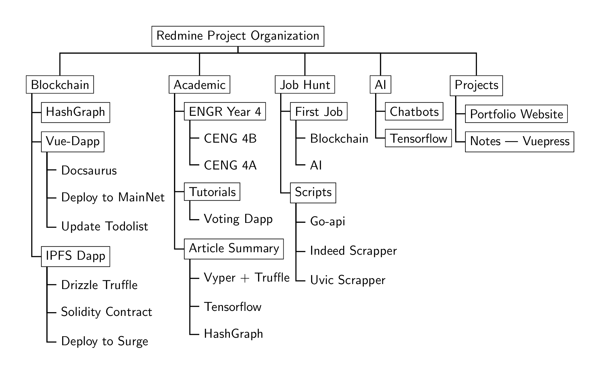

% ateb: https://tex.stackexchange.com/a/271349/ addaswyd o gwestiwn OOzy Pal: https://tex.stackexchange.com/q/271170/
\documentclass[border=20pt,tikz]{standalone}
\usepackage[edges]{forest}
\forestset{
direction switch/.style={
for tree={edge+=thick, font=\sffamily},
where level>=1{folder, grow'=0}{for children=forked edge},
where level=3{}{draw},
},
}
\begin{document}
\begin{forest}
% forest preamble: determine layout and format of tree
direction switch
[Redmine Project Organization
[Blockchain
[HashGraph
]
[Vue-Dapp
[Docsaurus]
[Deploy to MainNet]
[Update Todolist]
]
[IPFS Dapp
[Drizzle Truffle]
[Solidity Contract]
[Deploy to Surge]
]
]
[Academic
[ENGR Year 4
[CENG 4B]
[CENG 4A]
]
[Tutorials
[Voting Dapp]
]
[Article Summary
[Vyper + Truffle]
[Tensorflow]
[HashGraph]
]
]
[Job Hunt
[First Job
[Blockchain]
[AI]
]
[Scripts
[Go-api]
[Indeed Scrapper]
[Uvic Scrapper]
]
]
[AI
[Chatbots]
[Tensorflow]
]
[Projects
[Portfolio Website]
[Notes --- Vuepress]
]
]
\end{forest}
\end{document}Created by David Li